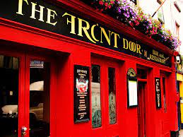
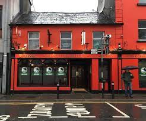
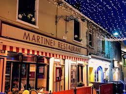
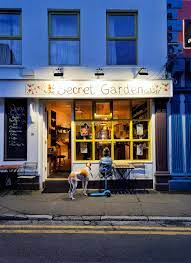

If you are after a spot to grab a pint, look no
further than The Front Door Pub. With rave reviews and
a near 5 star rating you know it will be a good time.
Adress: 8 Cross Street Upper, Galway, H91 YY06
Tel: (091) 563 757
Website: The Front Door Pub
E-mail: info@frontdoorpub.com

Murt Rabbitt's is another great spot to grab a pint or
try some of Galway's local cuisine with the food recieving
rave reciews.
Adress: 23 Forster St, Galway, H91 W1WK
Tel: (091) 566 490
Website: Murty Rabbitt's
E-mail: reservationsmurtyrabbitts@gmail.com

If wine is more up your ally then Marinte's is a perfect match
with a four star review and great food to go along with your drink
it's definitely worth dropping by.
Adress: 21 Quay St, Galway, H91 XR58
Tel: (091) 565 662
Website: Martine's Restaraunt & Winebar
E-mail: info@martines.ie

Maybe you are looking for a nice quiet place to grab a coffee and relax,
the Secret Garden pictured above is just one example of wide the range of cafes
available here in Galway.
Adress: 8 William St W, Galway, H91 YA6X
Tel: 085 266 1156
Website: Urban Grind
E-mail: hello@urbangrind.ie